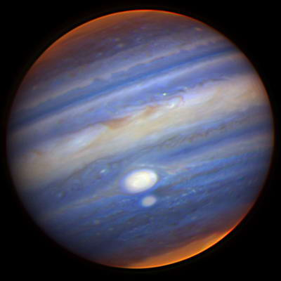

Earth
EARTH, OUR HOME planet, is a world unlike any other. The third planet from the sun, Earth is the only place in the known universe confirmed to host life.
With a radius of 3,959 miles, Earth is the fifth largest planet in our solar system, and it's the only one known for sure to have liquid water on its surface. Earth is also unique in terms of monikers. Every other solar system planet was named for a Greek or Roman deity, but for at least a thousand years, some cultures have described our world using the Germanic word “earth,” which means simply “the ground.”
View details »

Vernus
Although the planet is the second closest planet to the sun, it's by far the hottest of the eight worlds in our solar system. Its thick atmosphere is mostly made of carbon dioxide with clouds of sulfuric acid, which traps the sun's heat and creates a runaway greenhouse effect.
Thanks to this atmospheric blanket, temperatures on Venus' surface can soar over 880 degrees Fahrenheit—hot enough to melt lead. The surface pressure is around 90 times that on Earth, which would feel like standing under about a half a mile of water. Wintertime doesn't even provide a reprieve from the heat. With an axial tilt of three degrees, Venus has just one season: hot.
View details »

Mercury
Named for the fleet-footed Roman messenger god, Mercury is the closest planet to the sun, zipping around our parent star at an average of 36 million miles away. However, Mercury’s orbit is not a perfect circle. The planet can pass as close as 29 million miles and as far away as 43 million miles. Living up to its name, Mercury is the fastest planet in the solar system, speeding along at about 29 miles per second and completing each orbit around the sun in just 88 Earth days. Mercury is also the smallest planet in the solar system, measuring just 3,032 miles wide at its equator. That makes it only slightly larger than Earth’s moon.
View details »